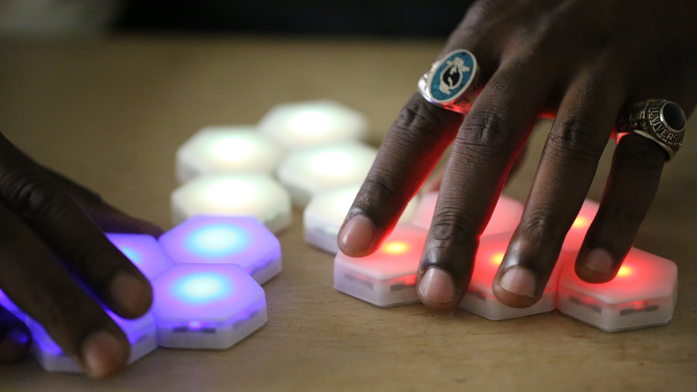

Fracture
{kind=link}
Fracture is an abstract strategy game for Automatiles, a platform for "smart" physical tabletop games.
The goal of Fracture is to make each of your five tiles "happy" - by making sure it has at least two neighbor tiles, neither of which are its own color - before your opponents. You move by fracturing the board into two discrete pieces, physically separating and recombining the board.

Just glancing at a Fracture board, it's difficult to ascertain what is happening. It instead only starts to make sense once you're physically manipulating the tiles with your hands. It's a tabletop game that requires you to rely on kinaesthetics and tactile spacial intuition as much as intellect.
The game was designed in collaboration with Jonathan Bobrow, Celia Pearce, Jeanie Choi, and Isabella Carlson. While you can't currently play Fracture, my collaborator is working on a commercial release of Automatiles through his company Move38.
Fracture was selected as a Finalist at IndieCade 2016.